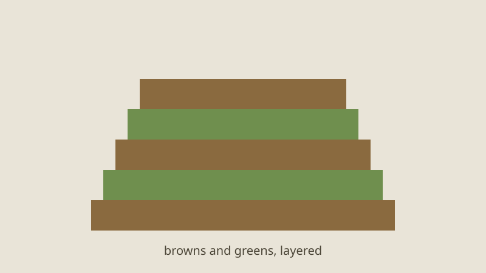
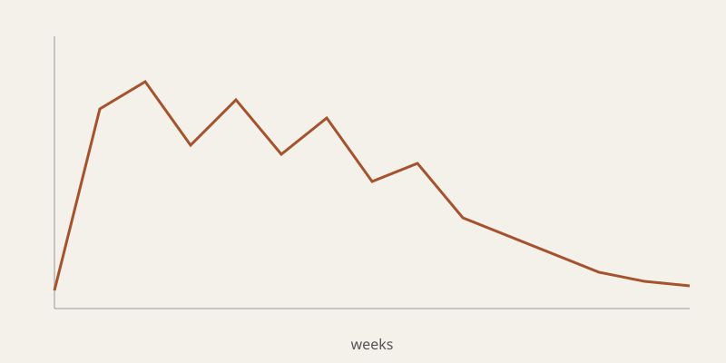

How a Hot Compost Pile Actually Works
Most compost piles are not really composting. They are slowly rotting, which is fine, but it takes a year and the result is patchy. A hot pile is different: it reaches 55 to 65 degrees Celsius within a few days, kills most weed seeds, and turns kitchen scraps and autumn leaves into dark, crumbly soil in about eight weeks. The difference is not magic. It comes down to three things you can control: the mix, the moisture and the air.
I have run a hot pile at the bottom of the allotment for six years now, and for the last two I have kept a cheap temperature probe in it. The numbers taught me more than any book did, so this piece walks through what happens inside, week by week, and ends with the small script I use to log it.
The mix: browns and greens
Microbes need carbon for energy and nitrogen to build their bodies. Gardeners call the carbon-rich material "browns" (dry leaves, straw, shredded cardboard) and the nitrogen-rich material "greens" (grass clippings, vegetable scraps, coffee grounds, fresh manure). The classic advice is a carbon to nitrogen ratio of roughly thirty to one by weight, which in practice means two or three buckets of browns for every bucket of greens.

Too many greens and the pile goes anaerobic and smells of ammonia. Too many browns and it simply sits there, cold and dry. If you are unsure, err towards browns: a slow pile is a nuisance, a smelly one is a problem with the neighbours.
Moisture: the wrung-out sponge
The microbes live in a thin film of water around each particle. Without that film they go dormant; with too much water, the air spaces fill and oxygen cannot reach them. The test everyone uses is to squeeze a handful. It should feel like a wrung-out sponge: damp all the way through, with a drop or two of water at most.
“Water the pile as you build it, not afterwards. Water poured on top of a finished heap runs straight down the sides and leaves the middle dry.”
Air, heat and the four phases
Once the mix and moisture are right, the pile heats itself. Mesophilic bacteria, which prefer moderate temperatures, start first and multiply quickly on the easy sugars. Their activity raises the temperature until it becomes too hot for them, and thermophilic bacteria take over. That is the hot phase, and it is where the pile does most of its work.

| Phase | Temperature | Typical length |
|---|---|---|
| Mesophilic | 20–40 °C | 1–3 days |
| Thermophilic | 45–65 °C | 1–3 weeks |
| Cooling | falls to 30 °C | 2–4 weeks |
| Curing | ambient | 1–2 months |
As the easy food runs out and oxygen in the centre is used up, the temperature drops. Turning the pile, moving the outside to the middle, brings in fresh air and new material, and the temperature climbs again. Three or four turns over the first month are usually enough. After that the pile cools, fungi and larger creatures move in, and the material cures into finished compost.
Logging the temperature
You do not need a sensor to make good compost, but it is satisfying to watch the curve. My probe is a waterproof DS18B20 on a long lead, read by a small board that sends a reading every ten minutes. The script that turns the readings into a daily summary is short:
import csv, statistics
from collections import defaultdict
days = defaultdict(list)
with open("pile.csv") as f:
for row in csv.DictReader(f):
days[row["time"][:10]].append(float(row["celsius"]))
for day, temps in sorted(days.items()):
print(f"{day} max {max(temps):5.1f} mean {statistics.mean(temps):5.1f}")
The output makes the phases obvious. A day where the maximum stays above 55 for most of the readings is a good hot day; when the mean falls below about 40 for two days running, it is time to turn.
When it goes wrong
- It smells of ammonia or rotten eggs. Too wet or too many greens. Add shredded cardboard and turn it.
- It never heats up. Too dry, too small, or too many browns. A pile needs to be at least a cubic metre to hold its heat.
- It heats, then stops after a week. That is normal. Turn it.
The best thing about a hot pile is how forgiving it is once you understand what the microbes want. Get the mix roughly right, keep it damp, give it air, and they will do the rest faster than you would believe.
12 comments
Great piece! I use a pallet bin and it works brilliantly.